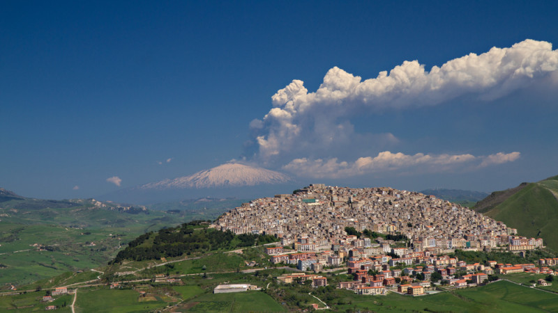
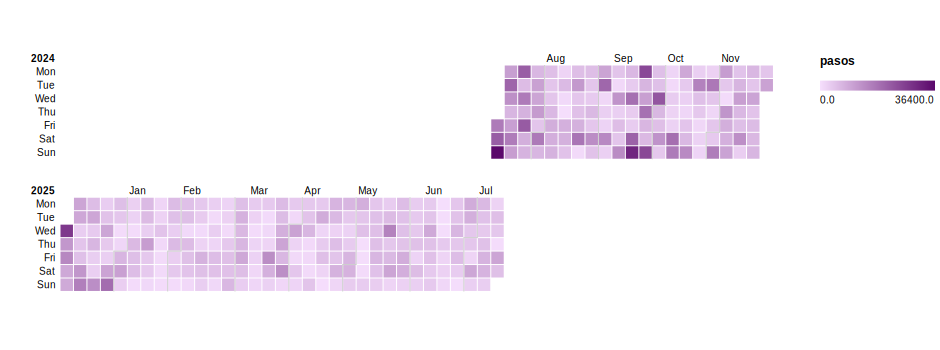

Visualización de mis Pasos Diarios
Un análisis personal del 2024 - 2025
Gangi vs. AMBA

¿Cuál fue la variación anual de mis pasos diarios?

¿Cómo fueron variando mis pasos diarios en cada mes?
¿Cuál fue la tendencia anual?